Technical Skills
Languages: Javascript, Clojure, Java, Ruby, Objective C, C, C#, Python, basic shell scripting.
Frameworks: NodeJs, .Net, Flask.
DB: MySQL, Postgres, SQLite. IDE: Vim, Sublime, jetBrains (webStorm, RubyMine, intelliJ), Xcode.
Tools: Docker, Fig, PowerPoint, Hadoop, LAMMP, Xmgrace, VMD
Current Experience
06'14-Now
Software Developer
Custom build software solution in various backend such as NodeJs, .Net, with frontend in AngularJS. - Full stack in highly OOP, MVC design pattern; Provide accurate solution representing business priorities; Operate with agile methodology in fast pace, tight client feed back fashion.
Occational customized small applications in Clojure, Java, Ruby on Rails and Python.
Exposure and work closely with other technologies such as Docker and big data assessment/analysis in Hadoop.
Other responsiblities such as powerpoint presentation, communicating with clients and structuring messages for non-technical stakeholders.
Previous Projects/Experience
Order
Jun'14-Jun'14
Nodejs, AngularJs, Postgres
an interal web app that tracks daily orders/requests
A solo project. Worked on a one-page web app that serves as a tool for the employees to imput daily orders/requests, and also a tool for supervisors to track/monitor the daily orders/requests. The app contains simple statistic, and options to edit all the orders/requests, and the app is currently serving daily at a Taiwanese company.
Necklish
Jan'14-Jun'14
Obj-C, Nodejs, AngularJs, Ionicframework
an iOS and a hybrid MVP app for a pre-launch startup called Necklish
A solo project. Worked on every feature of the app, including frontend code, backend server, as well as design for both the iOS and the hybrid MVP app. The hybrid MVP app is served as a temporary app for the cross-platform devices.
scatterPlot
Dec'13-Dec'13
AngularJs
A simple 3D visualization of S&P 500 stock in 2013
scatterPlot
Game-On
Jun'13-Aug'13
Python, Flask, Postgresql
A dashboard web app that fetches users' Nike Fuel information and orgainizes competitions and achievements.
A group project. Worked on storing users' information and provided API for the frontend developers.
Dashboard
Jun'13-Aug'13
C#, SQL
A performance dashboard web app to efficiently interact/display database information.
A group project. Worked as a supporting developer for the main backend project architect.
ScrapBook
Sep'12-Dec'12
Obj-C
A photo-sharing app designed to let family members share photos easily.
The ScrapBook App aims to provide a photo-sharing platform for family members, with one main goal to simplify the sign-in/login process for technologically difficult members. The process,in short ,is to asssociate each device with an ID that makes each App unique. The project is a research project funded by Belhumeur's Lab, the biometrics lab at Columbia University. The group consists of two teams, seperating into API team and front-end iOS team. My responsibility was on the iOS side. The code heavily utilizes UIPageControl, ScrollView, RestKit, CoreData, and MBProgressHUD while smoothly integrating the server response to make automatic images newsfeed fetched, parsed, and combined into the current pages.
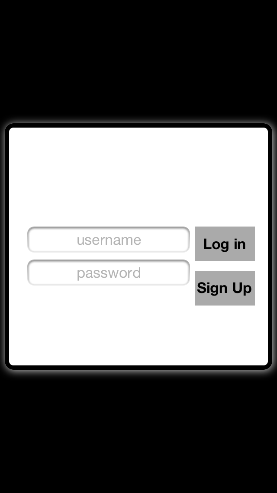
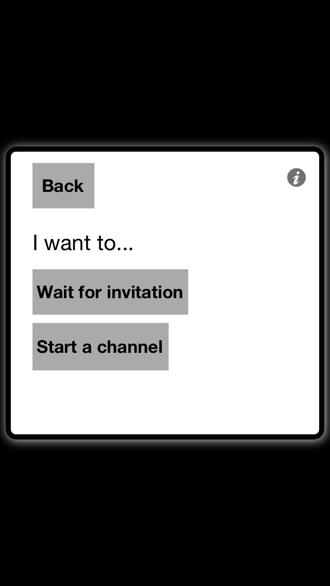
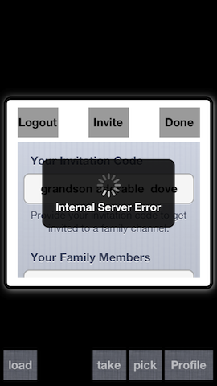
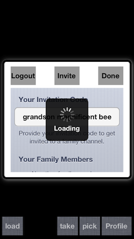
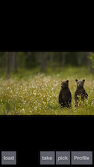
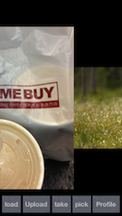
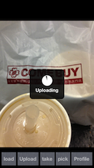
WesPoints
Sep'11-Jan'12
Obj-C
An calculator application designed specifically for Wesleyan University's meals/points system.
[Git]
WesPoint allows Wesleyan students to keep track of their points/meals spending throughout a semester.
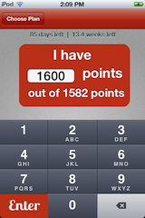
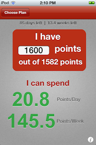
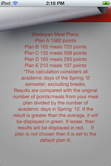
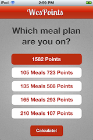
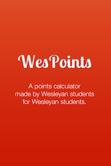
Monkey Game
Mar'12-Jun'12
Obj-C
A game application programmed to explore pre-school-aged children's core knowledge numerical recognition concepts.
[Git]
The Monkey Game is a research project that was designed working with the Cognitive Development Labs at Wesleyan University. The idea behind the application is to observe pre-school-aged children's number recognition skills by engaging them with images that are programmed into the game.
The project pioneered the implementation of mobile technology in a research field at Wesleyan University and therefore, part of my responsibility working on this project was also to train and tutor lab members in Objective-C.
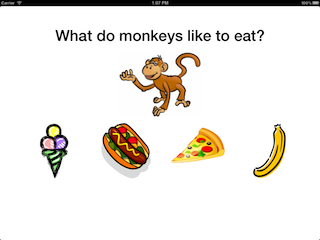
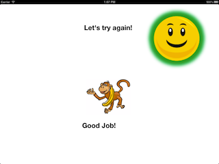
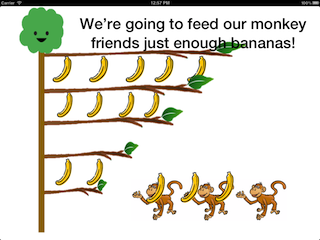
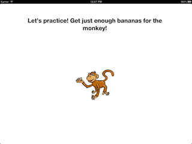
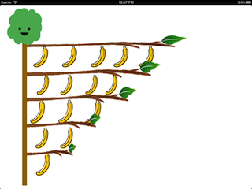
Remote Therapy
Apr'12-Aug'12
Obj-C, MySQL, PHP
A game application created in order to allow remote interactions between Alzheimer's patients and their relatives.
[Git]
Remote Therapy is a project that was developed with the Developmental Psychology Laboratory at Waseda University in Japan. neilni This application enables family members ("senders") to video-chat, upload familiar images, and monitor their relatives who are suffering from Alzheimer's ("receivers"), thus creating a possibility for interaction between patients and their family members, who may not always be physically present. The intended purpose of this application is to improve patients' memory performance by increasing their interactions with loved ones.
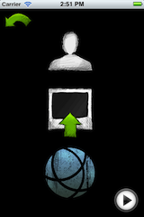
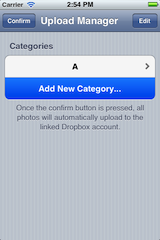
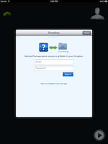
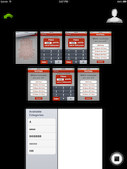
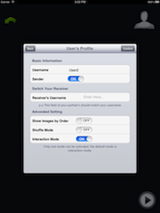
Nano-Particles simulation
Nov'09-Jul'12
C, LAMMPS, Python,
Shell Scripting, Cluster-Computing,
GPU, VMD
A collaborative research project established to create simulations of DNA-linked Nano-Particles in an atomic scale.
Working on this project as a research assistant, I designed object-oriented DNA simulation programs, as well as data analyzing programs in C and Python. Over a span of three years, I transferred many number models (shown below) from C to LAMMPS and greatly improved my familiarity with the Linux environment, shell scripting, and cluster computing. Another of my responsibilities working in this laboratory was to give powerpoint presentations to the Physics Department at Wesleyan University.
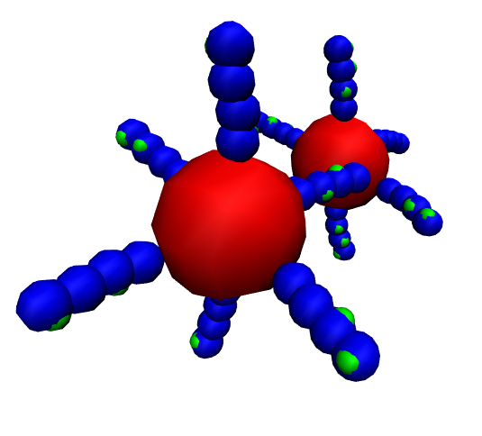
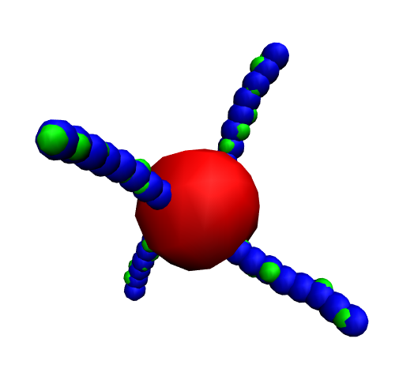
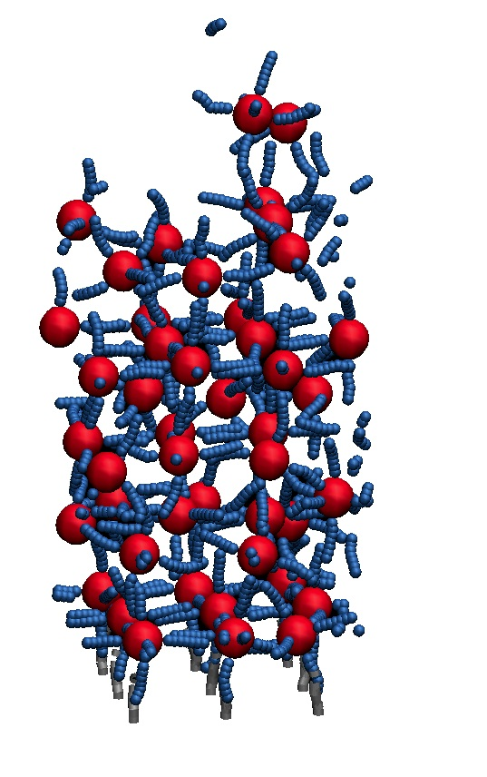
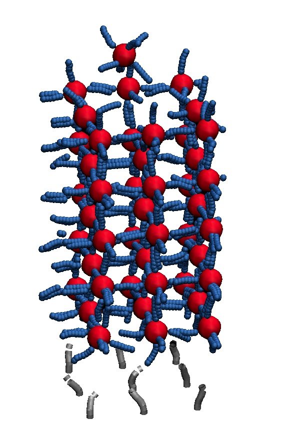
Twitter Mining Project
May'12-Aug'12
HTML, Python,
jQuery, CSS, MySQL, PHP
A collaborative open-source project devised to track and analyze a specific terminology on Twitter.
[Git]
This project is a new summer project advanced by the Quantitative Analysis Center at Wesleyan University.
The project aimed to develop a tool that would track specific terminology on Twitter. The data generated from the Twitter Mining Project was intended for use by the Political Science Department. My role in this project was to create a web application that would allow users to adjust their preferable tracking parameters. The first beta version of this web application is now available @Twitter Mining.
About
Information
Name:
Email:
Contact No:
Languages:
Current City:
Education:
Neil(Tzu-Yang) Ni
tzuyangni@gmail.com | tn2275@columbia.edu | Neil_Ni@mckinsey.com
646-204-6572
Mandarin, English
New York
Columbia University'14 BS in Applied Physics & Computer Science